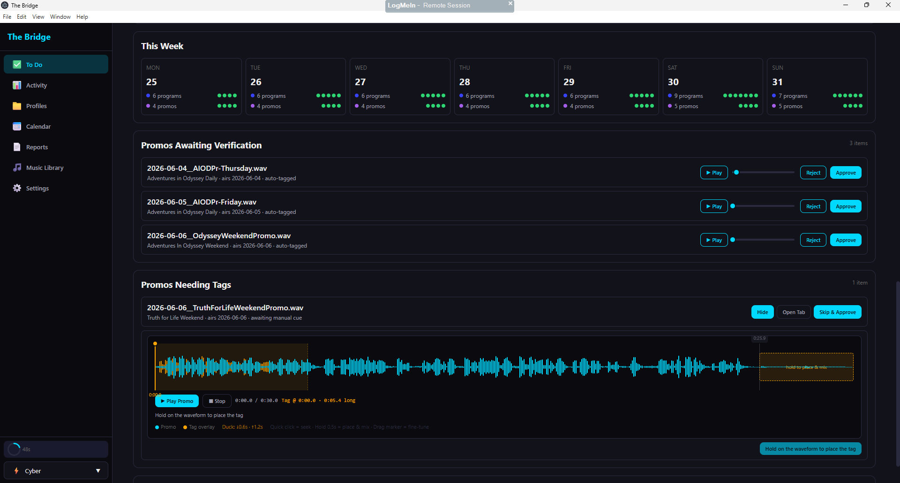

Internal tool
Built with Claude Code
AudioPipe — Radio File-Management Automation
A tool I designed and built end-to-end with Claude Code to erase the weekly grind of broadcast file prep. It handles the whole pipeline so the automation system — and I — don't have to:
- Scheduled FTP ingest of program and promo files
- A configurable audio-processing pipeline on arrival (normalization plus other processing), with clean, normalized metadata written to every file
- A release/hold system that drops files under generic names at the right moment, so radio-automation watchfolders pick them up automatically
- Smart promo tagging — incoming promos are auto-tagged by detecting the trailing "tail" and mixing in a show-specific air-time clip (mixed into the audio, not replacing it), or tagged in one click via a waveform editor
- A calendar view of everything downloaded and released
Impact: cut weekly file management from roughly an hour across several programs down to minutes. Built solo with AI — a working example of how I ship real systems fast.
Scheduled FTPAudio DSP / normalizationMetadataWatchfolder releaseWaveform editor
{kind=link}
{kind=link}
{kind=link}
{kind=link}
{kind=link}
{kind=link}
{kind=link}
{kind=link}